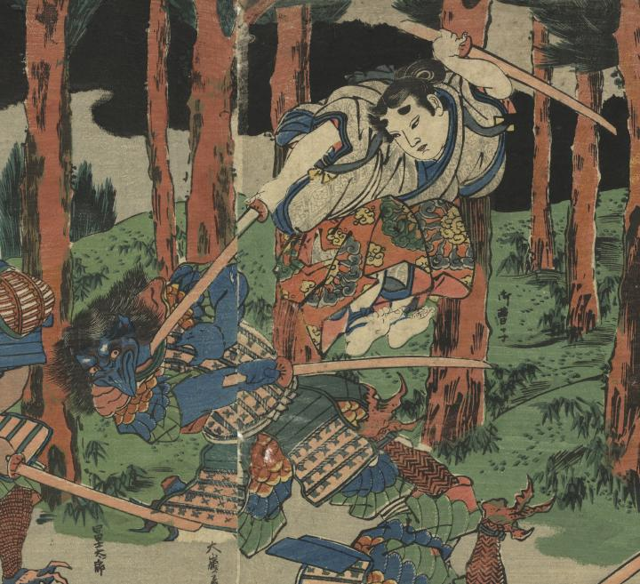

牛若丸が大嶺善鬼坊という天狗と兵術の修練をしている。烏天狗は、鎧を身に着けている。
著作者：五渡亭國貞／出典：親書誌：U426_nichibunken_0425：牛若鞍馬兵術励／日付：2015／資源識別子：U426_nichibunken_0425_0002_0000
Copyright (c)2010- International Research Center for Japanese Studies, Kyoto, Japan. All rights reserved.